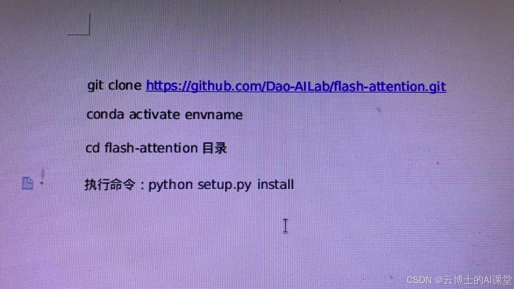
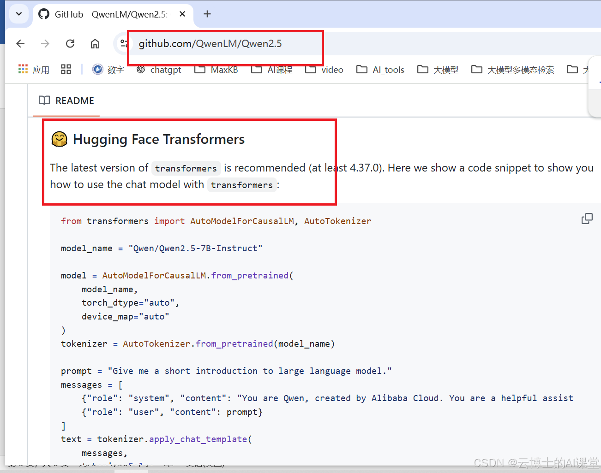
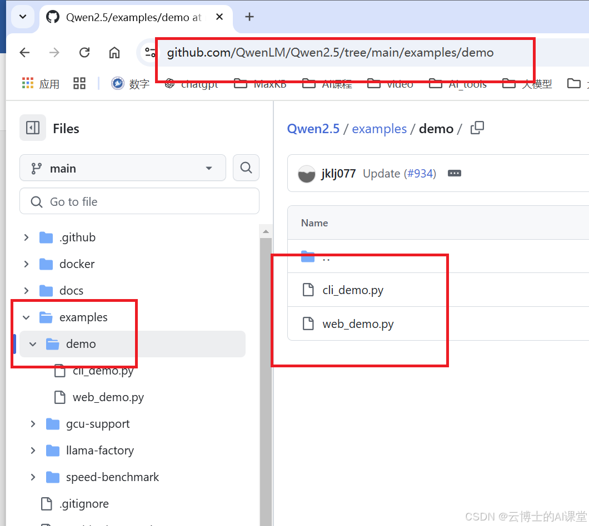

使用阿里开源大模型通义千问Qwen进行推理
1.前置条件
（1）已经安装ubutun22.04
如何学习大模型技术赋能业务和垂直领域(1):安装双操作系统_大模型操作系统用windows还是linux-CSDN博客
（2）Ubuntu安装英伟达Nvidia显卡驱动-CUDA-cuDNN
Ubuntu安装英伟达nvidia显卡驱动-CUDA-cuDNN详细步骤-CSDN博客
（3）Ubuntu安装大模型开发环境
2.基本说明
（1）使用Qwen开源模型版本
这里使用Qwen2.5-7B-Instruct 模型，这是4090显卡性能可以运行较好的版本
（2）建议从开源的官网代码开始学习
如何学习开源大模型的本地化推理，训练和部署呢？我建议从阿里的qwen2.5开始。首先这个开源模型已经是全世界最优秀的开源模型之一了。开始不要在网上乱找资料，最好的学习方式就是到官网，里面从推理训练到部署，所有的开源资料都有，当你真正的把这些都掌握了，再到网上其他地方搜索一些更高级的应用，或者直接把官网的例子应用到自己的项目，如果有问题再想办法解决。我觉得这是学习开源大模型一个好的方法
（3）Qwen2.5开源官网网址
3.安装配置开发环境
（1）创建虚拟环境
conda create -n qwen25_env python=3.10
（2）激活进入虚拟环境
conda activate qwen25_env
（3）保证虚拟环境中pytorch安装等配置
看本文前面前置条件，Ubuntu安装大模型开发环境-CSDN博客
（4）安装transformers等大模型开发相关库
注意下面安装都在虚拟环境qwen25_env下
conda install transformers
验证安装是否成功
在vscode编写如下代码并运行：
import transformers
print(transformers.__version__)
正常会显示版本号
继续安装
pip install ninja
然后按照下面方式安装flash-attention包，安装速度会比较慢，东西比较多，耐心等待

还需要安装下面两个包：
pip install modelscope 安装魔塔依赖包
pip install accelerate
到这里所有python库都安装完了
4.运行官网的Qwen2.5推理代码
下面运行三个来自官网（GitHub - QwenLM/Qwen2.5: Qwen2.5 is the large language model series developed by Qwen team, Alibaba Cloud.）的测试推理代码
（1）官网首页推理测试代码

最后增加一行print(response)，可以看到输出，也可以自己修改prompt提示语。
（2）首次运行需要从huggingface官网上自动下载模型文件
可能会链接不上，或者链接非常慢。解决方法使用国内镜像，或者通过其他办法到网站自己下载模型文件。下面讲述，如何使用国内镜像的方法，在程序运行中下载模型文件：
<1>找到当前python虚拟环境中的constants.py文件
比如我的安装路径
/home/anaconda3/envs/qwen25_env/lib/python3.10/site-packages/huggingface_hub/constants.py
格式如下：
Acaconda安装路径/env/虚拟环境名称/lib/python版本/site-packages/huggingface_hub/constants.py
<2>修改HUGGINGFACE_CO_URL_HOME和_HF_DEFAULT_ENDPOINT两个位置为镜像地址
HUGGINGFACE_CO_URL_HOME = "https://hf-mirror.com/"
_HF_DEFAULT_ENDPOINT = "https://hf-mirror.com"
<3>重新运行程序下载
<4>自动下载的模型文件在隐藏目录
在自己的home目录，ls -A命令查看所有文件，包含隐藏文件。下载后的模型文件在 .cache目录中。进入在home目录的：.cache/modelscope/hub/Qwen下面，是ls -all查看：
(qwen25_env) lyp@lyp-gpu:~/.cache/modelscope/hub/Qwen$ ls -all
total 12
drwxrwxr-x 3 lyp lyp 4096 Nov 12 16:25 .
drwxrwxr-x 6 lyp lyp 4096 Sep 24 16:43 ..
lrwxrwxrwx 1 lyp lyp 58 Nov 12 16:25 Qwen2.5-7B-Instruct -> /home/lyp/.cache/modelscope/hub/Qwen/Qwen2___5-7B-Instruct
drwxrwxr-x 2 lyp lyp 4096 Nov 12 16:25 Qwen2___5-7B-Instruct
说明：Qwen2___5-7B-Instruct存放模型目录，Qwen2.5-7B-Instruct创建的对应的链接目录，为了更方面使用，两个目录使用哪个都可以，推理代码中，将Qwen/Qwen2.5-7B-Instruct两处替换成这两个目录其中之一都可以，不替换的话，系统自动从缺省下载目录查找，当然也可以将此目录拷贝到自己需要位置，路径写对即可。
（2）测试代码中还有两个推理代码
一个是交互式的对话，一个是基于网页的对话交互。上述都没有问题，下面两个代码运行肯定是没有问题的，基于网页的程序需要占用端口号，如果程序没有正常关闭，下次会提示端口号被占用，需要用linux命令找到占用端口号的程序，kill掉即可，就释放了端口号。还有，注意模型路径的设置。

机器学习原理与实践
https://www.bilibili.com/cheese/play/ss27274
优质课程，试听课一定听听，100%好评至今。